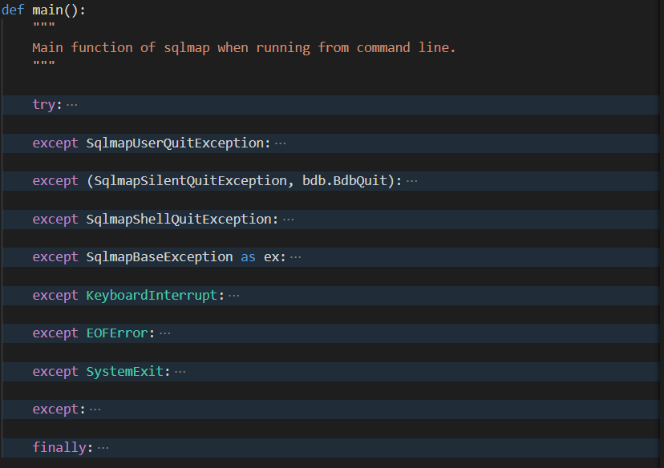
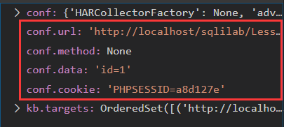

摘要 本篇文章主要记录作者在研究sqlmap源码时获得的各方面收获。
最近忙着考研，有缘再回来更新吧。
关键词: sqlmap；源码;
项目结构图 sqlmap版本 : 1.4.3.3#dev
1 2 3 4 5 6 7 8 9 10 11 12 sqlmap:. ├─data ├─doc # 描述文档: readme等 ├─extra # 拓展程序: 声音控制，运行CMD等 ├─lib # 核心功能: waf检测，注入检测等 ├─plugins # 插件程序: 各类数据库的信息,通用操作类 ├─tamper # 操作脚本: 绕过过滤 ├─thirdparty # 第三方库: 如BeautifulSoup爬虫库等 ├─txt # 字典文件: 库名，表名，列名 ├─sqlmap.conf # 配置 ├─sqlmap.py # 主程序 └─sqlmapapi.py # api文件
初始化与底层建筑 主要结构

我相信大家看到了上图应该就知道我们主要应该看 try 中的内容。实际上 except 中指的是 sqlmap 中各种各样异常处理，包含让程序退出而释放的异常/用户异常以及各种预期或非预期异常，在 finally 中，大致进行了数据库（HashDB）的检查/恢复/释放以及 dumper 的收尾操作和多线程的资源回收操作。
具体分析 0x01 引入部分 1 sys.dont_write_bytecode = True
这个变量意思就是当这个值为真时， .pyc 文件不会出现在资源包中。
1 sys.executable if weAreFrozen() else __file__
大意就是 sys.executable 函数返回python解释器位置。weAreFrozen() 函数从 lib/core/common.py 引入，作用是[待填]。
1 2 3 4 5 if "sqlmap.sqlmap" in sys.modules: for _ in ("cmdLineOptions" , "conf" , "kb" ): globals()[_] = getattr(sys.modules["lib.core.data" ], _) for _ in ("SqlmapBaseException" , "SqlmapShellQuitException" , "SqlmapSilentQuitException" , "SqlmapUserQuitException" ): globals()[_] = getattr(sys.modules["lib.core.exception" ], _)
getattr 功能为返回对象的值。整块代码的功能是为了导入 cmdLineOptions , conf , kb 等全局变量。
0x02 入口部分 1 2 3 4 5 dirtyPatches() resolveCrossReferences() checkEnvironment() setPaths(modulePath()) banner()
第一个函数就是 dirtyPatches() , 这个函数位于 lib.core.patch , 79行。其作用是：首先设定了 httplib 的最大行长度（ _http_client._MAXLINE ），紧接着处理双重分块编码问题，接下来导入第三方的 windows 下的 ip地址转换函数模块（ win_inet_pton ），然后对编码进行了一些替换，把 cp65001 替换为 utf8 避免出现一些交互上的错误，以及处理了http://bugs.python.org/issue17849 这个bug，这些操作对于 sqlmap 的实际功能影响并不是特别大，属于保证起用户体验和系统设置的正常选项，不需要进行过多关心。
紧接着即是 resolveCrossReferences() 函数, 该函数位于 lib.core.patch ，79行。主要用于解决交叉引用解析。交叉引用即导入循环，属于设计中层次不明问题。
checkEnvironment() 函数定义就在主函数中，其主要功能即检查模块路径，检查 Python 版本，导入全局变量。最关键的是导入了 ("cmdLineOptions", "conf", "kb") 这几个全局变量，并且直接在定义处( lib.core.data )找这几个变量意义不大，因为它们并非在定义处初始化的。
setPaths(modulePath()) 函数作用为初始化各种资源文件路径。
banner() : 打印 Banner。
1 2 3 args = cmdLineParser() cmdLineOptions.update(args.__dict__ if hasattr(args, "__dict__" ) else args) initOptions(cmdLineOptions)
cmdLineParser() 函数解析命令和参数。
initOptions(cmdLineOptions) 函数进行初始化，进行了配置文件初始化，知识库（KnowledgeBase初始化）以及用户操作的 Merge 和初始化。
如果遇到了针对 kb 和 conf 的操作，可以直接在这个函数对应的 lib.core.option 模块中寻找对应的初始化变量的定义，当然也有可能来源于 lib.parse.cmdline 中。
在检查输入是否标准和以及检查是否调用api（当调用api时覆写系统输出）后，进行初始化。（ init 函数 ）。确定所有初始变量的初始值，当然不需要跟进研究，只是在我们需要了解参数作用时再回头来研究即可。
1 2 3 4 5 6 7 8 9 10 11 12 13 14 if not conf.updateAll: if conf.smokeTest: from lib.core.testing import smokeTest os._exitcode = 1 - (smokeTest() or 0 ) elif conf.vulnTest: from lib.core.testing import vulnTest os._exitcode = 1 - (vulnTest() or 0 ) elif conf.bedTest: from lib.core.testing import bedTest os._exitcode = 1 - (bedTest() or 0 ) elif conf.fuzzTest: from lib.core.testing import fuzzTest fuzzTest()
初始化后立即就开始测试，当然这有个条件 if not conf.updateAll ，这个是来源于 lib.parse.cmdline 中定义的更新选项，如果这个选项打开，sqlmap 会自动更新并且不会执行后续测试步骤和实际工作的步骤。
测试板块：冒烟测试、vulnserver 运行测试、testbed 运行测试、fuzz测试。测试返回这个思路设计得还蛮精巧的。
冒烟测试是在将代码更改嵌入到产品的源树中之前对这些更改进行验证的过程。Vulnserver是一个由Stephen Bradshaw撰写易受攻击的服务器，其实相当于fuzz测试。Testbed 就是软件测试的特定软件、硬件环境，可以包括软件、硬件以及网络构件.
1 2 3 4 5 6 7 8 9 10 11 12 13 14 15 16 17 18 19 20 21 22 23 24 25 26 27 28 29 30 31 32 33 34 35 36 37 try : if conf.crawlDepth and conf.bulkFile: targets = getFileItems(conf.bulkFile) for i in xrange(len(targets)): try : kb.targets.clear() target = targets[i] if not re.search(r"(?i)\Ahttp[s]*://" , target): target = "http://%s" % target infoMsg = "starting crawler for target URL '%s' (%d/%d)" % (target, i + 1 , len(targets)) logger.info(infoMsg) crawl(target) except Exception as ex: if not isinstance(ex, SqlmapUserQuitException): errMsg = "problem occurred while crawling '%s' ('%s')" % (target, getSafeExString(ex)) logger.error(errMsg) else : raise else : if kb.targets: start() else : start() except Exception as ex: os._exitcode = 1 if "can't start new thread" in getSafeExString(ex): errMsg = "unable to start new threads. Please check OS (u)limits" logger.critical(errMsg) raise SystemExit else : raise
接下来就是真正的入口部分了，当然这段需要分析的代码比较多，所以我分成了3个部分：
part 1: 这部分的主要功能是爬虫。当同时存在 conf.crawlDepth 和 conf.bulkFile 参数时，通过 getFileItems 函数获得目标页面的URL targets ，然后对目标进行爬取。核心功能函数是 crawl ，位于 lib\utils\crawler 。
part 2: 不同时存在 conf.crawlDepth 和 conf.bulkFile 参数时，直接进入 start 函数。
part 3: 错误处理以及退出。
入口部分基本就介绍到这吧，接下来就进入 start 函数分析了。（ crawl 函数有空再分析吧）
0x03 start 函数 首先根据选项来判断处理，为了方便阅读，先把关键代码折叠起来：
1 2 3 4 5 6 7 8 9 10 11 12 13 14 15 16 17 18 19 20 21 22 23 24 25 26 27 28 29 30 31 32 33 34 35 36 37 38 39 40 41 42 if conf.hashFile: crackHashFile(conf.hashFile) if conf.direct: initTargetEnv() setupTargetEnv() action() return True if conf.url and not any((conf.forms, conf.crawlDepth)): kb.targets.add((conf.url, conf.method, conf.data, conf.cookie, None )) if conf.configFile and not kb.targets: errMsg = "you did not edit the configuration file properly, set " errMsg += "the target URL, list of targets or google dork" logger.error(errMsg) return False if kb.targets and len(kb.targets) > 1 : infoMsg = "found a total of %d targets" % len(kb.targets) logger.info(infoMsg) hostCount = 0 initialHeaders = list(conf.httpHeaders) for targetUrl, targetMethod, targetData, targetCookie, targetHeaders in kb.targets:……if kb.dataOutputFlag and not conf.multipleTargets: logger.info("fetched data logged to text files under '%s'" % conf.outputPath) if conf.multipleTargets: if conf.resultsFile: infoMsg = "you can find results of scanning in multiple targets " infoMsg += "mode inside the CSV file '%s'" % conf.resultsFile logger.info(infoMsg)
检查 conf.hashFile 参数，即在指令中包含了 --crack 选项时，脱机加载并破解哈希加密。
检查 conf.direct 参数，同上，指令中包含了 -d 选项时，进入action()函数，连接数据库。
检查 conf.url 参数，以及确定不存在表单和爬虫等选项( conf.forms 和 conf.crawlDepth 参数)，将 url , method , data , cookie 加入到 kb.targets 。这些参数的值都是通过解析命令行的指令得来的。如果输入了一条这样的命令: python .\sqlmap.py -u "http://localhost/sqlilab/Less-1/index.php" --data id=1 --cookie PHPSESSID=a8d127e 。那么此时参数就呈现这个样子：

使用 -c 选项时，但是 kb.targets 参数没有获得正常解析(通常是格式不对)，报错处理并且错误抛出。
打印各种信息，具体可以看代码，在此不赘述。
分块来分析最核心的检测方法，第一部分代码如下：
1 2 3 4 5 6 7 8 9 10 11 12 13 14 15 16 17 18 19 20 21 22 23 24 25 26 27 28 29 30 31 32 33 34 35 36 37 38 39 40 41 42 if conf.checkInternet: infoMsg = "checking for Internet connection" logger.info(infoMsg) if not checkInternet(): warnMsg = "[%s] [WARNING] no connection detected" % time.strftime("%X" ) dataToStdout(warnMsg) valid = False for _ in xrange(conf.retries): if checkInternet(): valid = True break else : dataToStdout('.' ) time.sleep(5 ) if not valid: errMsg = "please check your Internet connection and rerun" raise SqlmapConnectionException(errMsg) else : dataToStdout("\n" ) conf.url = targetUrl conf.method = targetMethod.upper().strip() if targetMethod else targetMethod conf.data = targetData conf.cookie = targetCookie conf.httpHeaders = list(initialHeaders) conf.httpHeaders.extend(targetHeaders or []) if conf.randomAgent or conf.mobile: for header, value in initialHeaders: if header.upper() == HTTP_HEADER.USER_AGENT.upper(): conf.httpHeaders.append((header, value)) break conf.httpHeaders = [conf.httpHeaders[i] for i in xrange(len(conf.httpHeaders)) if conf.httpHeaders[i][0 ].upper() not in (__[0 ].upper() for __ in conf.httpHeaders[i + 1 :])] initTargetEnv() parseTargetUrl() testSqlInj = False
先是检查网络连接以及重连，然后是 conf.url,conf.method,conf.data,conf.cookie 和 headers 字段的传递与设置，以及目标环境的设置，并且在 parseTargetUrl 函数中进行各种合理性检查， testSqlInj 的值为标记是否已进行注入测试。
1 2 3 4 5 6 7 8 9 10 11 12 13 14 15 16 17 18 19 20 21 22 23 24 25 26 if PLACE.GET in conf.parameters and not any((conf.data, conf.testParameter)): for parameter in re.findall(r"([^=]+)=([^%s]+%s?|\Z)" % (re.escape(conf.paramDel or "" ) or DEFAULT_GET_POST_DELIMITER, re.escape(conf.paramDel or "" ) or DEFAULT_GET_POST_DELIMITER), conf.parameters[PLACE.GET]): paramKey = (conf.hostname, conf.path, PLACE.GET, parameter[0 ]) if paramKey not in kb.testedParams: testSqlInj = True break else : paramKey = (conf.hostname, conf.path, None , None ) if paramKey not in kb.testedParams: testSqlInj = True if testSqlInj and conf.hostname in kb.vulnHosts: if kb.skipVulnHost is None : message = "SQL injection vulnerability has already been detected " message += "against '%s'. Do you want to skip " % conf.hostname message += "further tests involving it? [Y/n]" kb.skipVulnHost = readInput(message, default='Y' , boolean=True ) testSqlInj = not kb.skipVulnHost if not testSqlInj: infoMsg = "skipping '%s'" % targetUrl logger.info(infoMsg) continue
提取当前需要检查的参数，然后再警察缓存是否已经检测过当前目标，如果检查过了，就直接跳过并进入下一个目标的检测。接下来是针对多个目标的处理，因为篇幅原因就不贴代码了，与之前所写的单目标相同：初始化检测目标对应的字段，提取参数并验证格式，只是多了一个提示是否需要检测的语句。